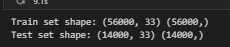

Concepts of Regression
(a) What is Linear Regression?
Linear regression is a supervised learning algorithm that models the linear relationship between independent variables and a continuous target variable. It fits the best line through data points to predict future outcomes.
(b) What is Logistic Regression?
Logistic regression is used when the target variable is categorical (often binary). It models the probability that a sample belongs to a particular class using the Sigmoid function.
(c) How are They Similar and Different?
Both are supervised and involve linear combinations of inputs. The key difference is in their output: linear regression predicts continuous values, while logistic regression predicts probabilities for classification.
(d) Does Logistic Regression Use the Sigmoid Function?
Yes. The Sigmoid function squashes the linear combination of inputs into a range between 0 and 1, representing probability for classification.
(e) How is Maximum Likelihood Related to Logistic Regression?
Logistic regression uses Maximum Likelihood Estimation (MLE) to find the parameters (weights) that best fit the data. MLE maximizes the likelihood that the model correctly predicts class labels.

GitHub Repository
View Regression Code on GitHub ↗Dataset Used
The cleaned diabetes dataset was used for training and testing Naïve Bayes models.
 Download Cleaned Dataset
Download Cleaned Dataset
Data Source for Logistic Regression
For Regression modeling, we reused the cleaned and encoded dataset originally prepared for the Decision Tree model
(dt_prepared.csv). This dataset was already preprocessed with categorical features encoded, missing values handled, and the
target column labeled appropriately. Reusing this file ensured consistency across our models, saved time, and allowed for a
direct comparison of model performance using the same input structure.
Train-Test Split
We split the dataset using an 80/20 ratio:
- Training Set: 80%
- Testing Set: 20%
 Download Train Sample
Download Train Sample
 Download Test Sample
Download Test Sample
Dataset Summary
Total number of train & test samples in the dataset:

Model Comparison
Logistic Regression vs Multinomial Naïve Bayes
We evaluated two classification models on a binary-labeled diabetes dataset to compare their effectiveness: Logistic Regression and Multinomial Naïve Bayes.
Logistic Regression
- Accuracy: 70.34%
- Showed strong predictive power with higher precision and recall across most target classes.
- Class 4 and Class 12 stood out with precision and recall values reaching 0.95 and 0.83 respectively.
- Worked well with the numeric and scaled features in the dataset, showing stable and consistent classification behavior.

Multinomial Naïve Bayes
- Accuracy: 54.82%
- Displayed lower performance with relatively poor precision and recall for several key classes.
- For example, Classes 0, 1, and 8 had f1-scores ranging from 0.45 to 0.52.
- Struggled to classify the numeric and continuous features accurately, as it assumes count-based inputs.

Insights
- Logistic Regression is more suitable for structured numeric datasets like the one used here.
- It can model linear decision boundaries effectively and benefits significantly from properly scaled and encoded features.
- Multinomial Naïve Bayes is efficient and fast but relies on discrete feature distributions (e.g., word counts) and does not perform well with continuous or normalized features.
What We Learned (Technical)
- Logistic Regression's use of the Sigmoid function allows it to model class probabilities effectively.
- It leverages Maximum Likelihood Estimation (MLE) to optimize parameters and decision boundaries.
- Multinomial NB’s performance is limited when applied to continuous tabular data not designed for count-based logic.
- Evaluation metrics such as accuracy, precision, recall, and f1-score reveal the depth of model performance beyond simple predictions.
What We Learned (Non-Technical)
Logistic Regression acted more like a "smart guesser" that adjusts itself based on actual patient data and patterns. It gave predictions that matched reality better than Multinomial NB, which assumed our features were like "word counts"—a poor fit for health data. This taught us that even a simple model like Logistic Regression can give dependable answers if the data is clean and well-prepared. On the other hand, using the wrong model for the data type can lead to weaker and less trustworthy predictions.
Final Takeaways
In our comparison, Logistic Regression emerged as the superior model for diabetes classification in this context, achieving a 70.34% accuracy compared to 54.82% from Multinomial Naïve Bayes. This difference highlights the importance of aligning model choice with data characteristics—numerical models perform better on numerical data. With simple architecture, interpretability, and stable results, Logistic Regression proves to be a practical and effective solution in health-related prediction tasks.